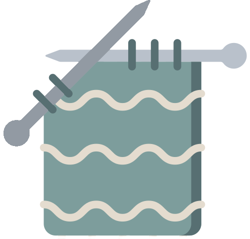

Hello.
I study Computer Science at Hellenic Open University. I design knitwear patterns for hand-knitting and I'm the owner of Morgana Knits.
My Skills.
Development
I started my programming journey over a year ago. I am always eager to learn something new and to tackle another challenge.

Knitting
I created Morgana Knits to design knitwear patterns for other knitters to use. Knitting helps me relax and unwind.